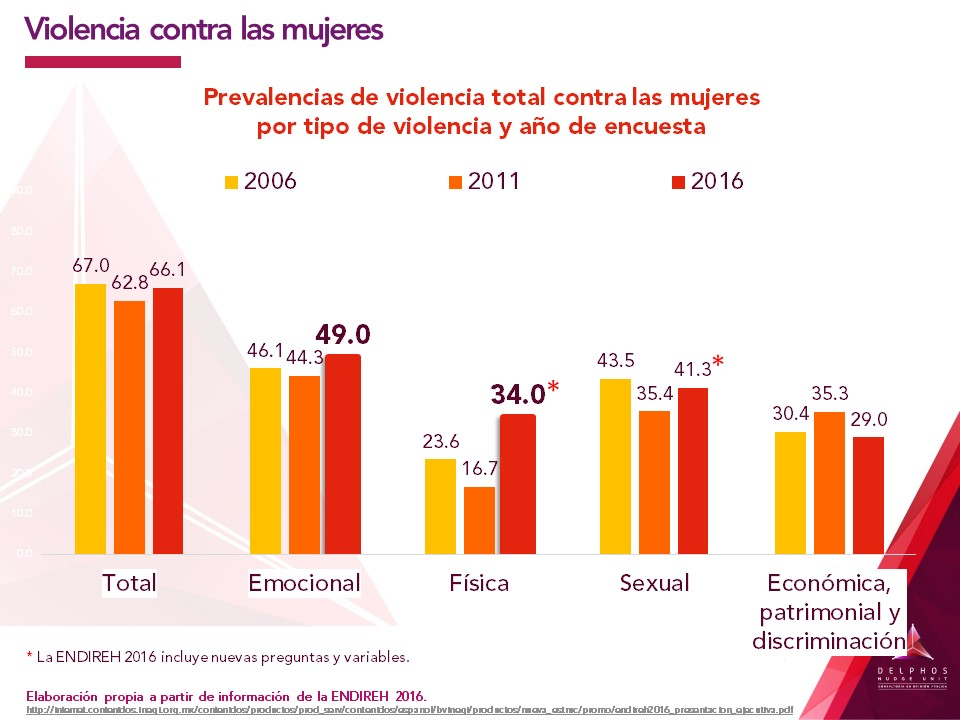
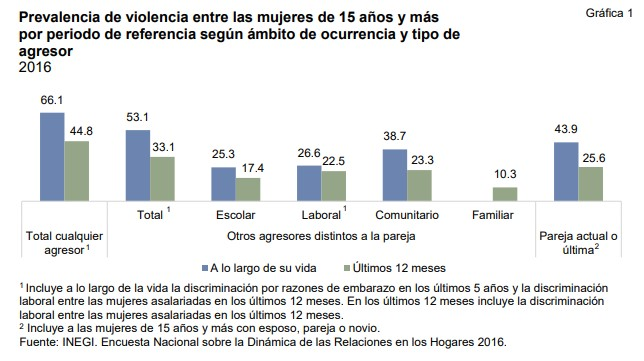
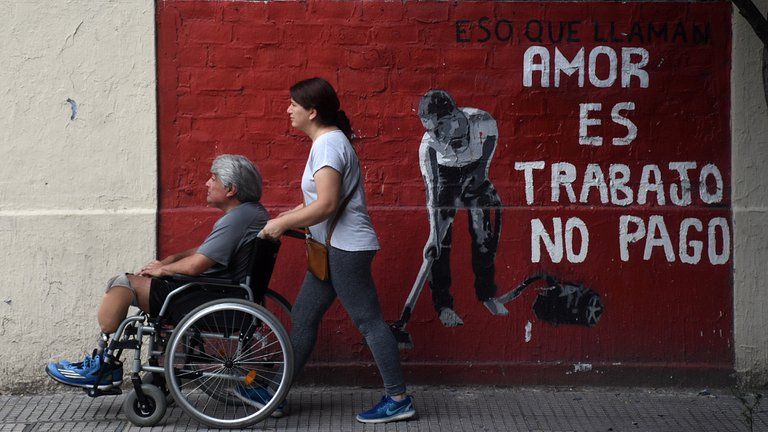
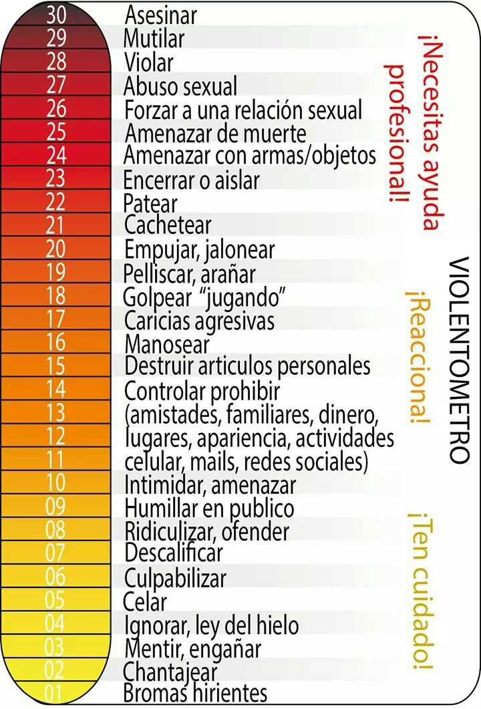

POW(MORRA,S)
Aunque la mujer haya logrado destacar en el ámbito público: político, científico, económico, social etc, en el ámbito privado, sigue sufriendo violencia, de manera partícular de las personas más cercanas: pareja, amigos y/o familia, por lo cual, es necesario fortalecer nuestra autoestima y analizar cómo la sociedad nos somete no sólo en el ámbito público sino también en lo privado, de manera tal que, aún teniendo éxito económico y social, las mujeres seguimos eligiendo quedarnos en espacios donde somos violentadas.
"Las feministas hemos logrado muchos cambios a nivel legislativo, y político, y hemos despatriarcalizado todo: la ciencia, la educación, las religiones, la medicina, la filosofía, el periodismo y la comunicación, el cine, el teatro, la democracia, los deportes, las instituciones, la familia...pero nos queda mucho trabajo por hacer en el nivel sexual, emocional y sentimental" "Mujeres que ya no sufren por amor" Coral Herrera.
Este espacio está destinado a compilar información diversa que permita dotar de herramientas para fortalecer el empoderamiento y la autoestima de las mujeres.
Tipos de violencia contra las mujeres
De Acuerdo con la Ley General de Acceso de las Mujeres a una Vida Libre de Violencia, los tipos de violencia contra las mujeres son:
- Violencia psicológica. Es cualquier acto u omisión que dañe la estabilidad psicológica, que puede consistir en: negligencia, abandono, descuido reiterado, celotipia, insultos, humillaciones, devaluación, marginación, indiferencia, infidelidad, comparaciones destructivas, rechazo, restricción a la autodeterminación y amenazas, las cuales conllevan a la víctima a la depresión, al aislamiento, a la devaluación de su autoestima e incluso al suicidio.
- Violencia física. Es cualquier acto que inflige daño no accidental, usando la fuerza física o algún tipo de arma u objeto que pueda provocar o no lesiones ya sean internas, externas, o ambas.
- Violencia patrimonial. Es cualquier acto u omisión que afecta la supervivencia de la víctima. Se manifiesta en: la transformación, sustracción, destrucción, retención o distracción de objetos, documentos personales, bienes y valores, derechos patrimoniales o recursos económicos destinados a satisfacer sus necesidades y puede abarcar los daños a los bienes comunes o propios de la víctima.
- Violencia económica. Es toda acción u omisión del Agresor que afecta la supervivencia económica de la víctima. Se manifiesta a través de limitaciones encaminadas a controlar el ingreso de sus percepciones económicas, así como la percepción de un salario menor por igual trabajo, dentro de un mismo centro laboral.
- Violencia sexual. Es cualquier acto que degrada o daña el cuerpo y/o la sexualidad de la Víctima y que por tanto atenta contra su libertad, dignidad e integridad física. Es una expresión de abuso de poder que implica la supremacía masculina sobre la mujer, al denigrarla y concebirla como objeto.
La violencia de género en México
Hablar de violencia de género es relativamente nuevo, aunque la violencia de género es un problema estructural fue hasta 1993 que la Asamblea General de las Naciones Unidas definió la violencia contra las mujeres como "“todo acto de violencia basada en la pertenencia al sexo femenino, que tenga o pueda tener como resultado un daño o sufrimiento físico, sexual o psicológico para la mujer, así como las amenazas de tales actos, la coerción o la privación arbitraria de la libertad, tanto si se produce en la vida pública como en la vida privada"
De acuerdo con el Instituto Nacional de Estadística y Geografía INEGI, el 66% de las mexicanas de 15 años y más (30.7 de 46.5 millones de mujeres), han experimentado alguna vez en su vida un acto de violencia de cualquier tipo ya sea emocional, física, sexual, económica, patrimonial o discriminación laboral.

De acuerdo con el INEGI, los homicidios de mujeres pasaron de 1,519 en 1990 a 3,893 en 2019, lo que representa un incremento de 256% y 5% porciento más de incremento con respecto a los homicidios en hombres.
"A los hombres nos matan más" ¿Quién no ha recitado ésta frase? Sí, del total de homicidios para el año 2019, en el 89% de los casos la víctima era un hombre frente al 11% restante correspondiente a las mujeres. Sin embargo, aquí hay una diferencia muy importante ¿de dónde proviene la violencia? A los hombres se les educa para transgredir, para usar su fuerza, para comprobar su masculinidad a través del ejercicio del poder sometiendo al otro o a la otra; los hombres se agreden entre ellos mismos. De acuerdo al INEGI, en el año 2019 del total de adultos sentenciados, el 91% fueron hombres y llegando hasta 93% para el caso de adolescentes sentenciados. De manera tal que sólo el 9% del total de delitos cometidos fueron realizados por mujeres.
Según las estadísticas del Instituto Nacional de Estadística y Geografía (INEGI 2007), los tres delitos de mayor incidencia atribuidos a las mujeres son: en primer lugar, los de materia de narcóticos; en segundo, robo y en tercero, lesiones.
Pero ¿y quién nos violenta? de acuerdo al INEGI el principal agresor de las mujeres es la pareja actual, seguido del ámbito comunitario, laboral y escolar. Sí la violencia hacia las mujeres en México no proviene de extraños desconocidos, la mayoría de las violencias ejercidas hacia las mujeres son personas de nuestro entorno, pareja, familia, compañeros de trabajo y amigos.

La violencia sexual es una de las principales violencias ejercidas contra las mujeres. En 2020, según datos del Sistema Nacional de Seguridad Pública se registraron 54,348 delitos contra la libertad y la seguridad sexual que incluyen; abuso sexual, acoso sexual, hostigamiento sexual, violación simple, violación equiparada, incesto, entre otros. La cifra más alta desde que se inició el registro en 1997, cifra, que se incrementa año tras año. Alrededor del 90% de las victimas de delitos de índole sexual son mujeres. A esto hay que sumarle que de acuerdo con cifras de la organización México Evalúa el 99.7% de los delitos de violencia sexual contra mujeres no se denuncia.
Según datos del Instituto Nacional de Estadística y Geografía, 2019, en México una de cada cuatro niñas sufre violación antes de cumplir la mayoría de edad. Según información de la Secretaría de Gobernación más del 60 por ciento de los casos ha ocurrido en el hogar con familiares o personas de confianza a niños de entre 6 y 12 años. de acuerdo con la Organización para la Cooperación y el Desarrollo Económicos (OCDE) México ocupa el primer lugar en el ámbito mundial en abuso sexual infantil con 5.4 millones de casos al año.
Otro rubro tristemente destacado en México es el mal llamado "embarazo adolescente" México ocupa el primer lugar en el tema, entre los países de la Organización para la Cooperación y el Desarrollo Económico (OCDE) con una tasa de fecundidad de 77 nacimientos por cada mil adolescentes de 15 a 19 años. Pero, en realidad ¿qué encubre esta cifra? ¿Cuántos de estos embarazos adolescentes en realidad son pedofilia? En México tenemos muy normalizada la cultura de la violación y la pedofilia ¿Cuántas de estos embarazos adolescentes son con un varón adulto que se aprovecha de la vulnerabilidad de una niña?.
La violencia intrafamiliar es otro de los graves problemas que enfrentamos las mujeres mexicanas de acuerdo al Sistema Nacional de Seguridad Pública se registraron 254,609 delitos contra la familia que incluyen; violencia familiar, incumplimiento de obligaciones de asistencia familiar entre otros la cifra más alta que se ha registrado históricamente en el país y 6% más que la cifra registrada en 2019. La implementación de medidas de aislamiento y distanciamiento social que previenen la propagación del virus COVID-19 en México se ha convertido en un factor de riesgo para las mujeres víctimas de violencia de género en el entorno familiar. Esto se debe a que, por causa del confinamiento, ellas se ven obligadas a convivir de manera ininterrumpida con sus agresores en una situación de estrés e incertidumbre ante el riesgo sanitario y económico que implica la pandemia.
La violencia económica puede pasar desapercibida debido a que no deja un rastro tan evidente como las agresiones físicas, pero tiene cifras alarmantes: 13.4 millones de mexicanas la han padecido en algún momento de su vida, es decir, 29% del total de mujeres de 15 años o más, según la Encuesta Nacional sobre la Dinámica de las Relaciones en los Hogares 2016
Se pueden distinguir dos variantes en este tipo de agresiones: la violencia económica y la patrimonial.
La situación de las mujeres en relación con los ingresos las coloca en una condición de vulnerabilidad que afecta su autonomía y empoderamiento económico, debido a que existe una proporción considerable de mujeres que no tienen ingresos propios y, por otro lado, de las que cuentan con ingresos se observaron notables diferencias respecto a los hombres en la magnitud de sus ingresos. En México, la Secretaría del Trabajo y Previsión Social (STPS) y el Instituto Mexicano del Seguro Social (IMSS) reportaron que durante enero de 2020 el salario diario asociado a trabajadores hombres asegurados fue mayor que el de las mujeres a nivel nacional, 416.4 pesos y 363.5 pesos por día, respectivamente, lo que representa una diferencia de 14.6 por ciento.
A su vez el 28.7% de las mujeres de 15 años y más no tienen ingresos propios, es decir, casi un tercio de esta población depende de otras fuentes para subsistir. Respecto a los hombres (6.0%), la diferencia es de 22.7 puntos porcentuales.
No sólo las mujeres percibimos menore salarios por el mismo trabajo, de acuerdo con el INEGI, el 33% mujeres en México, entre 15 y 54 años, son madres solteras o sea, que cargan con el total de los gastos de un hogar.
¿y que hay de la desigualdad en los cuidados? A las mujeres históricamente nos han condenado al trabajo no pago en pos del amor. Durante 2019 el trabajo doméstico total realizado dentro de los hogares sin remuneración tuvo un valor económico equivalente al 22.8% del PIB de México. Históricamente la distribución de las tareas domésticas y de cuidados se recarga de manera desproporcional hacia las mujeres, que siguen haciendo casi el total de este trabajo no pagado. En los hogares mexicanos las mujeres son quienes garantizan el 82.8% de la alimentación de los integrantes del hogar, para la limpieza y el cuidado de la ropa, el calzado y la vivienda la proporción es de 80.6% y para las actividades de cuidado a terceros la participación femenina es de 74.7 por ciento.
Es decir, las mujeres no solo ganamos menos por el mismo trabajo, al rededor de un tercio son el único sosten de su hogar con un menor salario y en las horas no laborales realizamos alrededor del 80% trabajo no pagado.En la teoría económica feminista, se habla de la pobreza de tiempo de las mujeres, que surge de su integración al mercado laboral pero sin aligerarse su carga de trabajo en casa, cumpliendo con dobles jornadas, excepto que reciben remuneraciones sólo por una de ellas, lo que lleva a que muchas mujeres abandonen sus inquietudes políticas, educativas o no puedan disfrutar del tiempo libre. De acuerdo con las cifras del INEGI, el trabajo de las mujeres casadas, sin importar si trabajan fuera de casa o no, es de poco más del doble que el de las mujeres solteras. Y estas labores para las mujeres que tienen hijos menores es 1.5 veces mayor al de las mujeres que no los tienen.

Deconstruir el amor romántico
" El día que la mujer pueda amar con su fuerza y no con su debilidad, no para huir de sí misma si no para encontrarse, no para renunciar si no para afirmarse...Entonces el amor será una fuente de vida y no un mortal peligro". Simone de Beauvoir
Aprendemos a amar bajo las normas, las creencias, los modelos, las costumbres, los mitos, las tradiciones, la moral y la ética de la cultura a la que pertenecemos.El romanticismo patriarcal es un mecanismo de control social para dominar a las mujeres bajo la promesa de la salvación y el paraíso amoroso en el que algún día seremos felices. Las mujeres seguimos sacrificándonos, renunciando, aguantando y sufriendo por amor, seguimos trabajando gratis en casa y en los cuidados por amor , seguimos soñando con la salvación personal a través del amor. La revolución amorosa es a la vez personal y colectiva: lo romántico es político, pero también es social, económico, sexual y cultural. Queremos que el amor deje de ser un instrumento de opresión para utilizarlo como el motor de la revolución sexual, afectiva y de cuidados en la que estamos trabajando desde los feminismos. El patriarcado nos quiere entretenidas en la utopía romántica, rivalizando con las demás por enamorar a los machos alfa de la manada y soñando con el príncipe azul. Así es como nos olvidamos de la lucha por un mundo mejor para todas.
Uno de los mitos románticos más potentes de nuestra cultura patriarcal es la idea de que la magia del amor nos cambia la vida, nos salva de todos los males y nos soluciona todos los problemas. El amor nos libera de las tareas domésticas, de los abusos de madrastras malvadas y enanitos tiranos, de la pobreza y la explotación del mercado laboral. Solo tenemos que saber esperar y tener fe. El gran mito en el que se sustenta casi toda nuestra cultura amorosa es la idea de que el amor lo puede todo. Es el mejor argumento para que no nos sintamos responsables de nuestro bienestar y nuestra felicidad, y para que creamos que el responsable es un apuesto príncipe. Es la mejor arma para mantenernos esperando, pasivas, dependientes y necesitadas de amor. Es la mejor manera de asegurarse de que las mujeres no vamos a alterar el orden patriarcal: solo vamos a confiar en que la magia del amor transforme nuestras vidas.
El mito de la omnipotencia del amor nos hace mucho daño, porque nos hace creer que no importa que ese hombre no te trate bien o no te valore: si tú persistes en tu empeño, si eres paciente y bondadosa, si te muestras sumisa y desvalida, al final él se dará cuenta de lo mucho que vales, de lo especial que eres y de lo grandiosos y puros que son tus sentimientos. La recompensa por amar con tanta devoción es que seremos correspondidas en algún momento. Y así es como el amor nos atrapa, haciéndonos creer que el sacrificio merece la pena y que él no podrá resistirse a la idea de ser amado con tanta abnegación y entrega.Son mitos que nos inmovilizan porque nos hacen creer que el cambio va a llegar desde fuera y que nosotras no tenemos que esforzarnos.
El amor, sin embargo, no puede transformar la realidad como por arte de magia: nuestra vida no cambia el día en el que conseguimos pareja. Los cambios ocurren cuando somos capaces de analizar nuestra vida y tomamos decisiones, cuando se nos ocurren buenas ideas y nos ponemos manos a la obra para sacar adelante nuestros proyectos, cuando decidimos cambiar lo que no nos gusta de nosotras mismas o de nuestras relaciones, cuando dejamos de ponernos obstáculos, cuando confiamos en nuestra capacidad para incidir positivamente en nuestro entorno, cuando nos juntamos con otras personas para transformar el mundo.
Para profundizar más a cerca de los mitos del amor romántico recomendamos una serie de lecturas.
- Mujeres que ya no sufren por amor. Coral Herrera, Doctora en Humanidades y Comunicación, escritora y ciberactivista sobre las relaciones humanas desde una perspectiva de género. En este libro la autora nos invita a dejar atrás el masoquismo romántico y a través de la revolución amorosa encontar otras formas de amar.
- Dueña de mi amor. Otro libro imperdible de Coral Herrera donde nos invita a ser dueñas de nuestro propio amor, deseos y sentimientos.
- Reinventa las reglas. Meg-John Backer en este libro nos inita a cuestionarnos las reglas del amor y la insatisfacción provocada por el mito de la media naranja
- Eso no es amor. Mariana Mrroquí, activista y educadora social nos enseña sobre prevención y detección de la violencia de género perpetuadas en conductas que confundimos con amor y felicidad.
- Polifonía Amorosa. Lura Latorre especialista en educación social es un libro donde nos invita a repensar el amor y analizar la violencia en nuestras relaciones.
- El algoritmo del amor. La periodista francesa Judith Dupotail realoza una investigación sobre Tinder y revela la verdad sobre cómo funciona.
Las violencias invisibilizadas
Las cifras de violencia de género son alarmantes. ¿Porque no las vemos?. Una parte del problema es que las hemos normalizado tanto que nos pasan desapercibidas, que muchas veces las confundimos con amor, son parte de nuestra cultura. Como también nos muestran las cifras, la mayor parte de los agresores provienen de nuestro entorno cercano, principalmente son; nuestra pareja, nuestros amigos, compañeros de trabajo y familiares cercanos.
Diversos organismos están trabajando para mostrarnos la cara oculta de la violencia, hacerla visible, activar nuestras alarmas y filtros que nos advierten del peligro.
Una herramienta útil es el violentómetro. Diseñado por el IPN es un material gráfico y didáctico que consiste en visualizar las diferentes manifestaciones de violencia que se encuentran ocultas en la vida cotidiana y que muchas veces se confunden o desconocen. Se divide en tres escalas o niveles de diferentes colores y, a cada uno, una situación de alerta o foco rojo.
